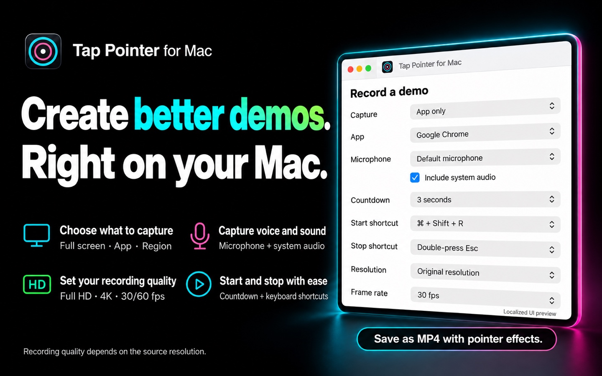

Zeiger-Spotlight
Ein weicher Kreis folgt deinem Zeiger – auch zwischen den Klicks.
Nimm Mikrofon und Systemton auf, während du Zeiger, Klicks und Ziehbewegungen hervorhebst. Die Effekte bleiben in der Aufnahme sichtbar. Jetzt kannst du auch deine Kamera einblenden.
Kein Kauf der iOS-App nötig. 7 Tage kostenlos testen, ohne Karte.
macOS 15 oder neuer · Apple Silicon und Intel
Anleitung zur Aufnahme ansehenEin weicher Kreis folgt deinem Zeiger – auch zwischen den Klicks.
Jeder Links- und Rechtsklick wird sofort sichtbar.
Beim Ziehen entsteht eine Linie, die vom ältesten Ende her verblasst.
Ändere die Einstellungen und klicke, rechtsklicke oder ziehe dann auf dem Bildschirm.
Ganzer Bildschirm · Einzelnes Fenster · Bereich
Mikrofon + Systemaudio
Full HD · 4K · 30/60 fps
Countdown · Tastenkürzel · Auto-Stopp-Timer
Nutze die integrierte Kamera oder eine externe Webcam. Passe Position und Größe an und zeichne den Hintergrund bei Bedarf weich.
Die Aufnahmequalität hängt von der Quellauflösung ab.
Aktiviere in den Aufnahmeeinstellungen „Kamera einblenden“. Unter „Kamera anpassen …“ wählst du die Kamera und stellst ihre Position und Größe ein. Erlaube den Kamerazugriff, wenn macOS danach fragt.
Ja. Das ausgewählte Mikrofon nimmt deine Stimme auf. Aktiviere Systemton für Töne, die auf dem Mac abgespielt werden. Beende vor der Aufnahme Programme, deren Ton du nicht brauchst.
Prüfe das gewählte Mikrofon und die Einstellung für den Systemton. Prüfe in macOS unter Datenschutz & Sicherheit die Zugriffe auf Mikrofon und Bildschirm- & Systemaudioaufnahme. Spiele vor einer längeren Aufnahme einen kurzen Test ab.
Ja. Die Zeigerhervorhebung und die Klick-Effekte sind auch bei Präsentationen in Echtzeit sichtbar. Mit der Aufnahmefunktion von Tap Pointer erscheinen sie außerdem in der gespeicherten MP4-Datei.


Teste alle Funktionen 7 Tage lang. Nach dem Test kannst du für 1,49 US-Dollar pro Monat inklusive Steuern ein Abo abschließen.
Du hast bereits ein Tap Pointer-Monatsabo auf deinem Smartphone? Dein Mac-Aktivierungscode gilt weiterhin.
Anleitung für den Mac